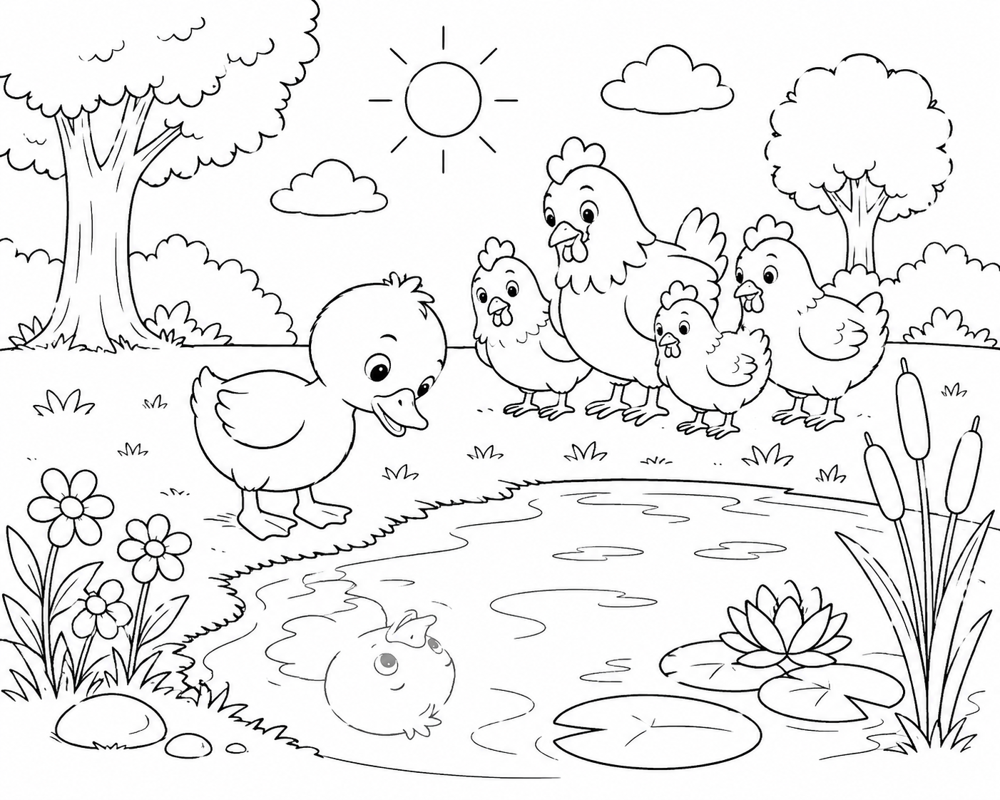

鸭子道格站在池塘边，好奇地看着水面。在他身后，一群小鸡在草地上望着他。把道格涂成黄色，小鸡涂成棕色和白色，池塘涂成蓝色，草地涂成柔和的绿色。你还看到画里有什么？一棵树？一朵花？一只蝴蝶？让你的想象力为这个农场添上色彩。
如果可以，去附近的池塘或小水边看一看。静静地坐下来观察。你看到了什么？你听到了什么？画出或写下你注意到的东西。
如果去不了池塘，就看看一碗水。光在水面上是怎样移动的？水摸在手上是什么感觉？
想一想你从未做过的一件事——比如尝一种新的食物、学一个新游戏、或者交一个新朋友。尝试它会是什么感觉？有点害怕？还是有点兴奋？
和身边的人聊一聊。有时候，当你有人为你加油时，发现新事物会更容易——就像小鸡们为道格加油一样。
“你发现了自己身上的什么东西——这件事让所有人，包括你自己，都感到惊讶？”
让你的思绪漫步 — 没有标准答案。
“我知道，与众不同并不意味着归属更少。”
写下你的名字和日期 — 把它留作提醒：你是特别的，正如你本来的样子。
(PDF版本包含所有活动、绘画空间和证书。)